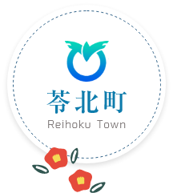

レタス
あたまのふさふさは、苓北町 でそだつレタス。シャキシャキして、おいしいんだ！
苓北町
キャラクターれいほくちゃん（かり）
れいほくちゃんと、おさんぽしよう ↓
ぼくは、
苓北町
の
魅力
をみんなにつたえるためにうまれた、ミナミハンドウイルカ
のおとこのこ！あたまにはレタスに緋扇貝
、ほっぺにはみかん！
苓北町
のすてきなところを、たっくさんみんなにおしえるばい！
ほんとはまだおなまえはないんだ、気軽に"れいほくちゃん"ってよんでね！

東大みかん愛好会
は、みかんがだいすきな大学生
たちのグループ。苓北町
のみんなと
みかん愛好会
の、
『苓北町
の魅力
をみんなにおしえたい！』
というおもいから、れいほくちゃんがうまれたよ！みかんのおいしさも、町
のいいところも、いっぱいつたえていくね！
あたまのふさふさは、苓北町 でそだつレタス。シャキシャキして、おいしいんだ！
あたまについているのは、きれいな貝 がら。緋扇貝 という、海 にすむ貝 のなかまだよ！
まあるいほっぺは、みかんだよ！苓北 のおいしいみかんを、ぜひみんなにもたべてほしいな。
ボクは、苓北 の 海 をおよぐイルカ！ひれとしっぽをうごかして、みんなにあいにいくよ。
きになるボタンを、おしてみてね！
あたたかい苓北町 では、いろいろなみかんのなかまがそだつよ。海 からのかぜと、太陽 のひかりをあびて、おいしくなるんだ。どんななかまがいるのかな？

おひさまのひかりと、海からのかぜ。
苓北
では、
いろんなみかんのなかまがそだっているよ！
あまくて、ほっとするね。
苓北 の おひさまをいっぱいあびて、すくすくそだつよ。 かわをむいて、ぱくり！ あまさのなかに、ちょっぴりすっぱさもあるよ。
ひとつずつ、たいせつに。
苓北 じまんの、 とくべつなみかん！ みかんをひとつずつ袋 でつつんで、 木になったまま、じっくりあまくするんだ。 「夢味 」 という名前でもしられているよ。
かわをむくと、いいかおり！
苓北 でそだつ、 冬のおいしいくだもの。 かわをむくと、あまいかおりがふわ〜っ！ すっぱさがすくなくて、あまいあじがとくちょうだよ。
あたまの「でこっ」がめじるし。
苓北 でもそだてられている、 ちょっとふしぎなかたちのみかん。 あたまがぽこんと出ているのがとくちょう！ あまさとすっぱさが、ぎゅっとつまっているよ。
みずみずしくて、さっぱり！
苓北 の とくさんひんのひとつ！ うすいきいろの、おおきなみかんのなかまだよ。 春から夏にかけてたのしめて、 さわやかなあじと、たっぷりのしるがみりょくなんだ。
くわしくしりたい、おうちのかたへ：苓北町 のしりょう（PDF）
熊本県 の天草 にある、海 と山 にかこまれた町 だよ。きれいな海 、おいしいみかん、とれたてのおさかな。すてきなところを、いっしょにみてみよう！
あおい海 が、ずうっとひろがっているよ。
海 のすぐそばに、みどりいっぱいの山 があるよ。
レタスやみかん。おいしいものが、たくさんそだつよ。
おさかなや緋扇貝 。海 にも、ごちそうがいっぱい！